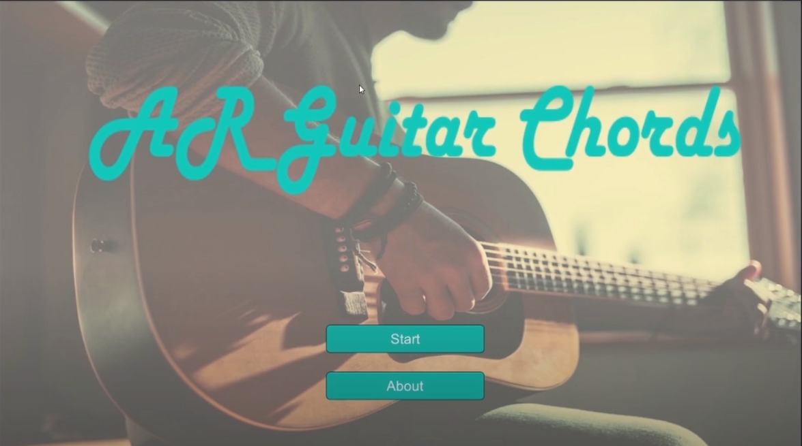
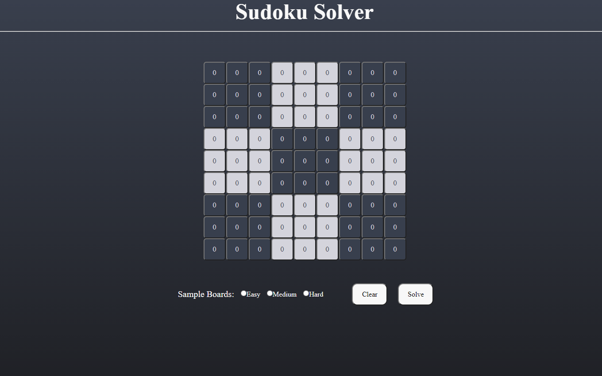
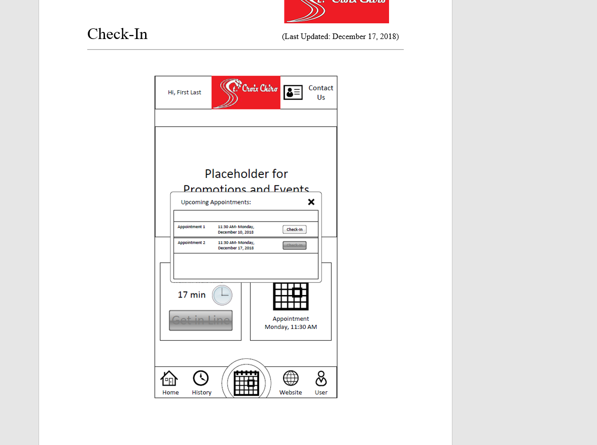
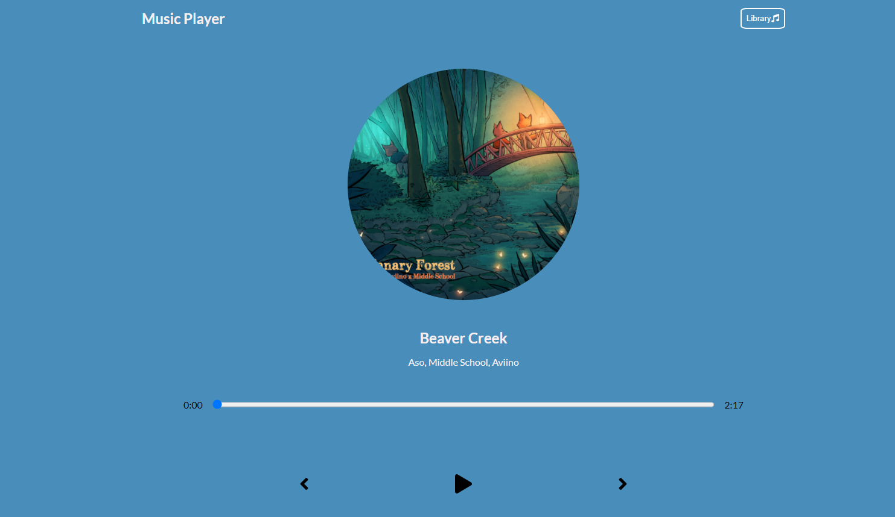
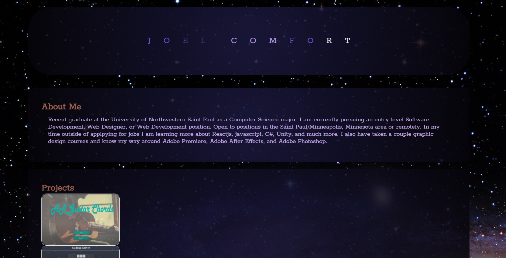
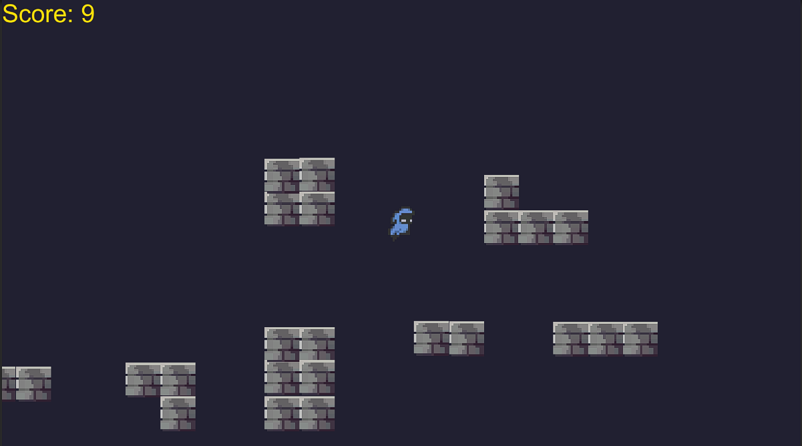

About Me
Recent graduate at the University of Northwestern Saint Paul as a Computer Science major. I am currently pursuing an entry level Software Development, Web Designer, or Web Development position. Open to positions in the Saint Paul/Minneapolis, Minnesota area or remotely. In my time outside of applpying for jobs I am constantly learning!
Projects






My Links


© | Joel Comfort | 2021